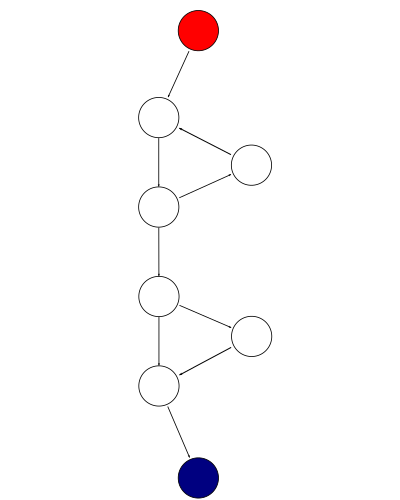

Clean Code - Part 1
These posts are based on a Clean Code talk I did for my team a few months ago, which, in turn, was inspired by the advice I gave to some of our summer interns as four rules of thumb for writing cleaner code:
- Write less code
- Write simple code
- Write stateless code
- Write readable code
I will cover the first two points in this post and the remaining two in Part 2. I'm talking about C++ and C# throughout, but most of this should be applicable to any object-oriented or multi-paradigm language.
Write Less Code
The number of defects found in open source projects was 0.45 defects/1,000 lines of code, while the industry's average is around 1 defect per 1,000 lines of code for companies not using automated testing such as static analysis.
Source: InfoQ
A great way to have fewer bugs is to have fewer lines of code! What I mean by this is that churning out many lines of code is by no means a measure of productivity yet, unfortunately, most developers still feel great when, at the end of the day, we wrote insert high number LoC.
How to write less code?
Two points to keep in mind: first, don't reinvent the wheel - don't write code if there is an existing library, internal to your company or open-source, that already does what needs to be done. Case in point, we refactored some code for a project (C#), extracted some interfaces, componentized things, and wrote a bunch of unit tests. All of this was great, except we ended up with a bunch of handcrafted stub classes: for
interface IMyComponent
{
void Foo();
int Bar();
void Baz();
}
we had
class MyComponentStub : IMyComponent
{
public void Foo()
{
}
public int Bar()
{
return 0;
}
public void Baz()
{
}
}
...
var myComponentStub = new MyComponentStub();
and so on. Implementing these stubs was tedious, needless work - we integrated Moq , a mocking library, and the above code turned into:
using Moq;
...
var myComponentStub = Mock.Of<IMyComponent>();
Moq uses reflection to stub out interfaces at run-time, so simply adopting the library helped us get rid of a lot of code.
The second way to write less code is to know the standard library of
your language of choice. Many times, a block of code can be replaced
with a simple library call. For C++, pay particular attention to the STL
<algorithm> header and for C#, System.Linq. Both contain many of
useful algorithms which can replace a lot of code.
I also recommend watching Sean Parent's C++ Seasoning talk, one of the best tech talks I've seen. The example he gives in the talk (from the Chrome codebase) shows how a couple of lines of STL code can be used instead of a whole convoluted function:
void PanelBar::RepositionExpandedPanels(Panel* fixed_panel) {
CHECK(fixed_panel);
// First, find the index of the fixed panel.
int fixed_index = GetPanelIndex(expanded_panels_, *fixed_panel);
CHECK_LT(fixed_index, expanded_panels_.size());
// Next, check if the panel has moved to the other side of another panel.
const int center_x = fixed_panel->cur_panel_center();
for (size_t i = 0; i < expanded_panels_.size(); ++i) {
Panel* panel = expanded_panels_[i].get();
if (center_x <= panel->cur_panel_center() ||
i == expanded_panels_.size() - 1) {
if (panel != fixed_panel) {
// If it has, then we reorder the panels.
ref_ptr<Panel> ref = expanded_panels_[fixed_index];
expanded_panels_.erase(expanded_panels_.begin() + fixed_index);
if (i < expanded_panels_.size()) {
expanded_panels_.insert(expanded_panels_.begin() + i, ref);
} else {
expanded_panels_.push_back(ref);
}
}
break;
}
}
// Find the total width of the panels to the left of the fixed panel.
int total_width = 0;
fixed_index = -1;
for (int i = 0; i < static_cast<int>(expanded_panels_.size()); ++i) {
Panel* panel = expanded_panels_[i].get();
if (panel == fixed_panel) {
fixed_index = i;
break;
}
total_width += panel->panel_width();
}
CHECK_NE(fixed_index, -1);
int new_fixed_index = fixed_index;
// Move panels over to the right of the fixed panel until all of the ones
// on the left will fit.
int avail_width = max(fixed_panel->cur_panel_left() - kBarPadding, 0);
while (total_width > avail_width) {
new_fixed_index--;
CHECK_GE(new_fixed_index, 0);
total_width -= expanded_panels_[new_fixed_index]->panel_width();
}
// Reorder the fixed panel if its index changed.
if (new_fixed_index != fixed_index) {
Panels::iterator it = expanded_panels_.begin() + fixed_index;
ref_ptr<Panel> ref = *it;
expanded_panels_.erase(it);
expanded_panels_.insert(expanded_panels_.begin() + new_fixed_index, ref);
fixed_index = new_fixed_index;
}
// Now find the width of the panels to the right, and move them to the
// left as needed.
total_width = 0;
for (Panels::iterator it = expanded_panels_.begin() + fixed_index + 1;
it != expanded_panels_.end(); ++it) {
total_width += (*it)->panel_width();
}
avail_width = max(wm_->width() - (fixed_panel->cur_right() + kBarPadding), 0);
while (total_width > avail_width) {
new_fixed_index++;
CHECK_LT(new_fixed_index, expanded_panels_.size());
total_width -= expanded_panels_[new_fixed_index]->panel_width();
}
// Do the reordering again.
if (new_fixed_index != fixed_index) {
Panels::iterator it = expanded_panels_.begin() + fixed_index;
ref_ptr<Panel> ref = *it;
expanded_panels_.erase(it);
expanded_panels_.insert(expanded_panels_.begin() + new_fixed_index, ref);
fixed_index = new_fixed_index;
}
// Finally, push panels to the left and the right so they don't overlap.
int boundary = expanded_panels_[fixed_index]->cur_panel_left() - kBarPadding;
for (Panels::reverse_iterator it =
// Start at the panel to the left of 'new_fixed_index'.
expanded_panels_.rbegin() + (expanded_panels_.size() - new_fixed_index);
it != expanded_panels_.rend(); ++it) {
Panel* panel = it->get();
if (panel->cur_right() > boundary) {
panel->Move(boundary, kAnimMs);
} else if (panel->cur_panel_left() < 0) {
panel->Move(min(boundary, panel->panel_width() + kBarPadding), kAnimMs);
}
boundary = panel->cur_panel_left() - kBarPadding;
}
boundary = expanded_panels_[fixed_index]->cur_right() + kBarPadding;
for (Panels::iterator it = expanded_panels_.begin() + new_fixed_index + 1;
it != expanded_panels_.end(); ++it) {
Panel* panel = it->get();
if (panel->cur_panel_left() < boundary) {
panel->Move(boundary + panel->panel_width(), kAnimMs);
} else if (panel->cur_right() > wm_->width()) {
panel->Move(max(boundary + panel->panel_width(),
wm_->width() - kBarPadding),
kAnimMs);
}
boundary = panel->cur_right() + kBarPadding;
}
}
becomes:
void PanelBar::RepositionExpandedPanels(Panel* fixed_panel) {
CHECK(fixed_panel);
// First, find the index of the fixed panel.
int fixed_index = GetPanelIndex(expanded_panels_, *fixed_panel);
CHECK_LT(fixed_index, expanded_panels_.size());
// Next, check if the panel has moved to the left side of another panel.
auto f = begin(expanded_panels_) + fixed_index;
auto p = lower_bound(begin(expanded_panels_), f, center_x,
[](const ref_ptr<Panel>& e, int x){ return e->cur_panel_center() < x; });
// If it has, then we reorder the panels.
rotate(p, f, f + 1);
}
Code snippets borrowed from Sean Parent's slides, I highly recommend watching the whole talk.
The key takeaway here is that there could be a standard library
implementation or an external module that can greatly simplify your work
and it's a good practice to always ask yourself do I really need to
write this?
Write Simple Code
First, a few notes on cyclomatic complexity from Wikipedia:
Cyclomatic complexity is a software metric (measurement), used to indicate the complexity of a program. It is a quantitative measure of the number of linearly independent paths through a program's source code.
The complexity M is then defined as
M = E − N + 2P
where
E = the number of edges of the graph, N = the number of nodes of the graph, P = the number of connected components.

A control flow graph of a simple program. The program begins executing at the red node, then enters a loop (group of three nodes immediately below the red node). On exiting the loop, there is a conditional statement (group below the loop), and finally the program exits at the blue node. This graph has 9 edges, 8 nodes, and 1 connected component, so the cyclomatic complexity of the program is 9 - 8 + 2 * 1 = 3.
Source: Wikipedia
The cyclomatic complexity of any piece of code should be minimized. This can be achieved by avoiding branching, namely, whenever possible, avoiding conditional statements and loops. Linear code is easier to read and maintain, and provides less opportunities for bugs.
Avoiding conditional statements
One way to avoid conditional statements is to, whenever feasible, throw exceptions instead of propagating errors through return values.
Here is an example of error code propagation through return values using
the Windows API's HRESULT:
HRESULT foo(); // Does some work and returns an HRESULT
HRESULT bar(); // Does some work and returns an HRESULT
HRESULT baz()
{
HRESULT hr = S_OK;
hr = foo();
if (FAILED(hr))
return hr;
hr = baz();
if (FAILED(hr))
return hr;
... // Some more work here which might fail
return hr;
}
if (SUCCEEDED(baz()))
{
// :)
}
else
{
// :(
}
This can be replaced with the more concise and much easier to read:
void foo(); // Does some work, might throw
void bar(); // Does some work, might throw
void baz()
{
foo();
baz();
... // Some more work here which might fail (and throw)
}
try
{
baz();
// :)
}
catch (...)
{
// :(
}
Error code return values come from the old days when exceptions didn't exist and make code harder to read. That being said, for C++ specifically, you should be careful about throwing exceptions across DLL boundaries. In practice though, a lot of code in the shape of the above example appears within the same executable for no good reason. If cross-DLL boundary is a problem, I would actually recommend using exceptions internally and switching to return codes at the public API boundary.
Another way to avoid conditional statements is to use the Null Object
pattern instead of
checking for null. For example, take an IActivity interface on which
we can log success or failure, and an ActivityScope which can retrieve
the current activity from a context:
interface IActivity
{
void LogSuccess();
void LogFailure();
}
class ActivityScope
{
...
public IActivity GetCurrentActivity()
{
if (!_context.HasCurrentActivity())
{
return null;
}
return _context.GetActivity();
}
}
With this implementation, all clients of the API have to make sure
GetCurrentActivity() returns an object as opposed to null. All callers
look like this:
ActivityScope activityScope = new ActivityScope();
activityScope.CreateActivity();
... // Do a bunch of stuff
var activity = activityScope.GetCurrentActivity();
if (activity != null)
{
activity.LogSuccess();
}
While there is a single ActivityScope implementation, there are
hundreds of calls to GetCurrentActivity, all coming with a boilerplate
null check. The Null Object alternative for this is to provide a
NullActivity, for which LogSuccess and LogFailure don't do
anything. ActivityScope can return NullActivity instead of null if
there is no Activity in the context:
class NullActivity : IActivity
{
public void LogSuccess() { }
public void LogFailure() { }
}
class ActivityScope
{
...
private static NullActivity _nullActivity = new NullActivity();
public IActivity GetCurrentActivity()
{
if (!_context.HasCurrentActivity())
{
return _nullActivity;
}
return _context.GetActivity();
}
}
Now callers don't need to worry about getting back a null, and can use the API like this:
activityScope.GetCurrentActivity().LogSuccess();
Yet another way to reduce branching is when it used for mapping between two types:
if (a == IdType.Foo)
{
b = "Foo string";
}
else if (a == IdType.Bar)
{
b = "Bar string";
}
else if ...
A pattern like this (which can also take the form of a big switch/case statement) can usually be replaced with indexing into an array or looking up the corresponding value in a hash map:
Dictionary<IdType, string> IdTypeToStringMap = new Dictionary<IdType, string>()
{
{ IdType.Foo, "Foo" },
{ IdType.Bar, "Bar" },
...
};
...
b = IdTypeToStringMap[a];
This is, again, easier to maintain, since it is declarative - the
mapping is given as data (IdTypeToStringMap), not as code (long series
of if/else).
Avoid loops
This goes back to the C++ Seasoning talk, namely the No Raw Loops guideline. Here's a C# example: given a list of numbers, we want to get the square of all the odd numbers in the list.
var numbers = new List<int> { 6, 1, 2, 7, 3, 4, 9, 5, 8 };
// Get the squares of all odd numbers
One way to do this is to maintain a list of numbers, iterate over the list, check if numbers are odd, and if so, square them and add them to the list:
// Get the squares of all odd numbers
IEnumerable<int> SquareOdds(IEnumerable<int> numbers)
{
var squares = new List<int>();
foreach (int number in numbers)
{
if (number % 2 != 0)
{
squares.Add(number * number);
}
}
return squares;
}
var squares = SquareOdds(numbers);
A neater way to do this is to use a generator instead of manually maintaining the list of squares:
// Get the squares of all odd numbers
IEnumerable<int> SquareOdds(IEnumerable<int> numbers)
{
foreach (int number in numbers)
{
if (number % 2 != 0)
{
yield return number * number;
}
}
}
var squares = SquareOdds(numbers);
That being said, what I would actually recommend is using Linq:
// Get the squares of all odd numbers
var squares = numbers.
Where(number => number % 2 != 0).
Select(number => number * number);
Fewer lines of code and no branching whatsoever1. Where and
Select are generic algorithms, and their arguments are the predicates
we use. This makes the intent of the code clear at a glance - we are
filtering the collection with a predicate (number => number % 2 != 0)
and applying a transformation to it with another predicate
(number => number * number). Also, the filtering and transformation
are library functions, so we can be fairly certain they work well, and
only need to worry about maintaining our predicates.
It might not look like a big deal in this simple made-up example, but as
code evolves, it becomes harder and harder to follow the iteration
logic, as the code gets littered with break, continue, and return
statements (see the Chrome example quoted in the Write Less Code
section).
Key takeaways:
- Try to keep functions linear (or as linear as possible)
- Default to throwing instead of propagating errors up the call stack
- Consider creating a null object when code is littered with null checks
- Separate algorithm logic from predicates to make the intent of the code clear (in other words, no raw loops).
Notes on performance
The most interesting question I was asked is what are the performance implications of using an STL algorithm or Linq.
The default answer is, of course, you have to measure for your particular case! Blanket statements cannot be made about performance, as there are many factors involved: compiler, runtime, standard library, OS, architecture, whether code is on a hot path or not, and so on and so forth.
Still, my recommendation is to use the library algorithms and, only if they become the bottleneck (which in most cases shouldn't happen), look into replacing them with handcrafted code. Another thing to keep in mind is that standard library authors know what they're doing, so it's very likely that library code is already pretty well optimized. I ran a simple wall clock benchmark for 1M iterations for some of the examples I used throughout the presentation (both the handcrafted and the library versions), and in all cases the code leveraging library functions ran slightly faster.
-
Cyclomatic complexity of this is actually higher when computed by looking at basic blocks (eg. from Visual Studio's
Analyzemenu), since the compiler will automatically add a finally block to dispose of the Linq-returned IEnumerables in case of exception. That being said, I prefer compiler-generated complexity to developer-generated complexity. ↩